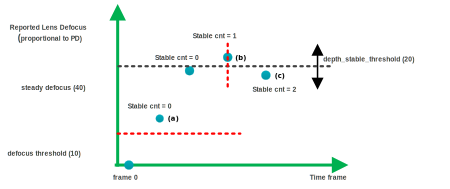

The min_stable_cnt parameter in the stable table works with the defocus_threshold and depth_stable_threshold parameters in the scene monitor table to determine if a scene change is stable. Scene stability is one of the criteria for PDAF to exit the monitor state and to trigger a search.
The following example is labeled to explain the parameters:
